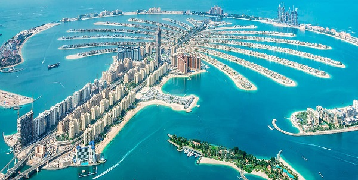

Los analistas de ForwardKeys, especializados en tendencias en el ámbito del turismo, han publicado el
ranking de las ciudades más visitadas en 2021 (hasta el 23 de noviembre de 2021). ¿Imaginas cuáles
son
ahora las ciudades más visitadas del mundo y cuáles han dejado de serlo?
Dubái
Se coloca en la cúspide de la pirámide, siendo la ciudad más visitada en 2021 (también
fue la más visitada del mundo en 2019). Dubái es uno de los siete emiratos que conforman los
Emiratos
Árabes
Unidos. El turismo de esta ciudad se ha visto favorecido por su ubicación geográfica, estando
situado en
la
costa del golfo
Pérsico, en Medio Oriente.

Qué ver y hacer en Dubái
1. Burj Khalifa: es el edicio más alto del mundo, con 828 metros de altura. Este hotel cuenta
con
un
observatorio a 555 metros de altura. Las vistas son chocantes, pues es el único edifico tan alto en
una
ciudad rodeada de desierto.
2. Dubai Fountains: para seguir con los récords, estas fuentes danzantes son las más grandes
del
mundo.
Situadas a los pies del Burj Khalifa, hacen un espectáculo diario con agua, luces y música.
3. Excursión al desierto: el desierto es algo obligado que ver en Dubái. Se encuentra justo a
las
afueras
de la ciudad. No te pierdas una travesía en 4x4 o quad por las dunas, una experiencia de
adrenalina
pura.
4. Burj al Arab: es el hotel más alto del mundo, con 321 m de altura. Cuenta con una
clasificación
de
7
estrellas, por lo que, además de ser el más alto del mundo, es también el más lujoso. Se
ubica
en su
propia isla
artificial.
5. Barrio histórico Al Fahidi: la parte más tradicional de la ciudad es preciosa. Los
edificios de
yeso y coral de
estilo árabe se encuentran perfectamente conservados.
6. Abu Dhabi: sería una pena estar tan cerca de Abu Dhabi y quedarse sin visitar la ciudad. Su
principal
atractivo es la gran mezquita de Sheikh Zayed.
Cancún
Es una ciudad mexicana ubicada en el estado de Quintana Roo, en el oriente de México.
Es considerada un destino turístico de talla mundial. El sector turístico es la principal fuente de
ingresos
de
la ciudad.
Qué ver y hacer en Cancún
1. Relajarte en las playas: esta ciudad cuenta con más de 20 km de
playas públicas de todo tipo. Entre las más recomendadas se encuentran Playa Delfines,
Playa
Tortugas, Playa Langosta y Playa Caracol.
2. Visitar Chitzén Itzá: el yacimiento maya más importante de México y una de las 7
maravillas
del
mundo.
En esta antigua ciudad de la civilización maya se conservan en buen estado importantes estructuras,
como
el
Templo del Jaguar, el Juego de Pelota y la Pirámide Kukulkán.
3. Visitar las ruinas de Tulum: en las ruinas mayas de Tulum se conservan algunas estructuras
importantes.
Se puede recorrer perfectamente en unas dos horas y terminar dándote un baño en la playa.
4. Visitar las ruinas de Cobá: este enorme yacimiento arqueológico maya cuenta con más de 6000
estructuras
enterradas en la selva, de las que solo se ha desterrado el 10%
Estambul
Es la ciudad que cierra nuestro ránking. Se trata de la más poblada de Turquía, siendo
además su centro histórico, cultural y económico. Se encuentra ubicada en el estrecho del Bósforo.
Qué ver y hacer en Estambul
1. Santa Sofía: se trata del gran monumento que destaca sobre la inmensa cantidad de
maravillas
arquitectónicas y culturales que abundan en Estambul. En su interior destacan los mosaicos
bizantinos.
2. Mezquita Azul: su nombre se debe a los más de 20000 azulejos azules que componen su
interior.
3. Palacio Topkapi: posee más de 700000 m2 repartidos en varios edificios, situados
en
torno a 4
patios. Entre todas las salas del palacio destaca la del tesoro, donde se encuentran piezas tan
importantes
como el diamante del cucharero o el puñal topkapi.
4. Hipódromo de Estambul: lo único que se conserva son tres monumentos que adornaban la spina,
el
pódium central alrededor del cual se realizaban las carreras en la antigua Constantinopla. Es el
monumento
más antiguo de Estambul
5. Basílica Cisterna: se localiza cerca de Santa Sofía. Algunos de los acueductos que
conducían el
agua a
la cisterna aún quedan en pie, lo que no se conserva es la basílica. La basílica posee 36 columnas
de 9
metros de altura, de las
que destacan dos que tienen como base una cabeza de Medusa.